My name is Luca Pallas and I’m Australian with my Dad being English and my Mum Italian. Besides this course I have studied one unit of coding (C++) at university previously and more recently completed a Certificate IV in Programming. My pastimes are watching shows with my partner, fiddling around with my guitar and bass and playing videogames (Skyrim currently). I’ve also recently become a father to a beautiful baby boy, who is almost 3 months old, so have been enjoying watching him grow and learn new things.
I’m interested in IT, particularly programming/software development as it appeals to the part of me that likes to problem solve, and the fact that programming involves having an issue or desired outcome that needs to be resolved/achieved, and then needing to find the best algorithm/method to do that really interests me. On a broader level this also applies to troubleshooting and testing/bug fixing, as even though it can be frustrating, the sense of accomplishment once you find the solution keeps me interested and wanting to learn more. My interest in IT started when I was originally studying Physics at Murdoch University and was looking into what else besides the bachelor was needed for working in the field. I read that most physicists know at least some basic coding to help make little programs that they may need for their research, or to handle data analysis, so I did a unit in programming (C++) and found that I was more drawn to learning to code then doing physics. After that I decided to do a Certificate IV in Programming (C#, Java, SQL, .NET), but as had no luck finding work from that I put it on the back burner and did work in retail, but still had IT on the mind.
The reason I chose RMIT is because when I was looking for IT, particularly programming jobs online, I kept seeing them requiring a Bachelor of Computer Science or Information Technology. Now as I have recently become a father, I didn’t want to be spending hours away from home at a campus to do a Bachelor, so I started looking for online course and through Open Universities I found that RMIT had an online Bachelor in IT available, and having been a Melbourne resident in the past (I now live in Perth) I knew that RMIT had a good reputation, so I jumped right in.
During my studies I expect, or at least hope, to learn a lot more about programming, as well as various other aspects of IT such as web design, cyber security, operating systems, network setup, database managements systems, and UI/UX design. I also hope to get some experience/assistance with networking outside within the industry so that post studies I will have a higher chance of finding employment. I also aim to have a portfolio of projects that I can show potential employers, both of my best course work as well as some personal projects that I come up with as I learn more and become more proficient in my skills.
https://www.seek.com.au/job/56245474?type=standout#sol=67d2158ab168b3e1fc3486c59358afda001948ba
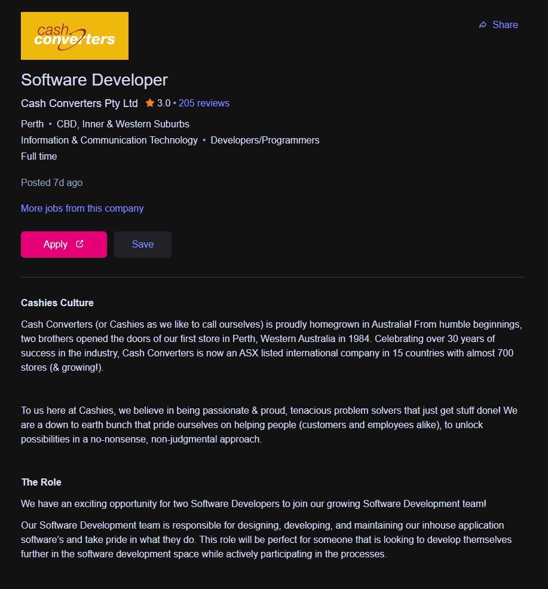
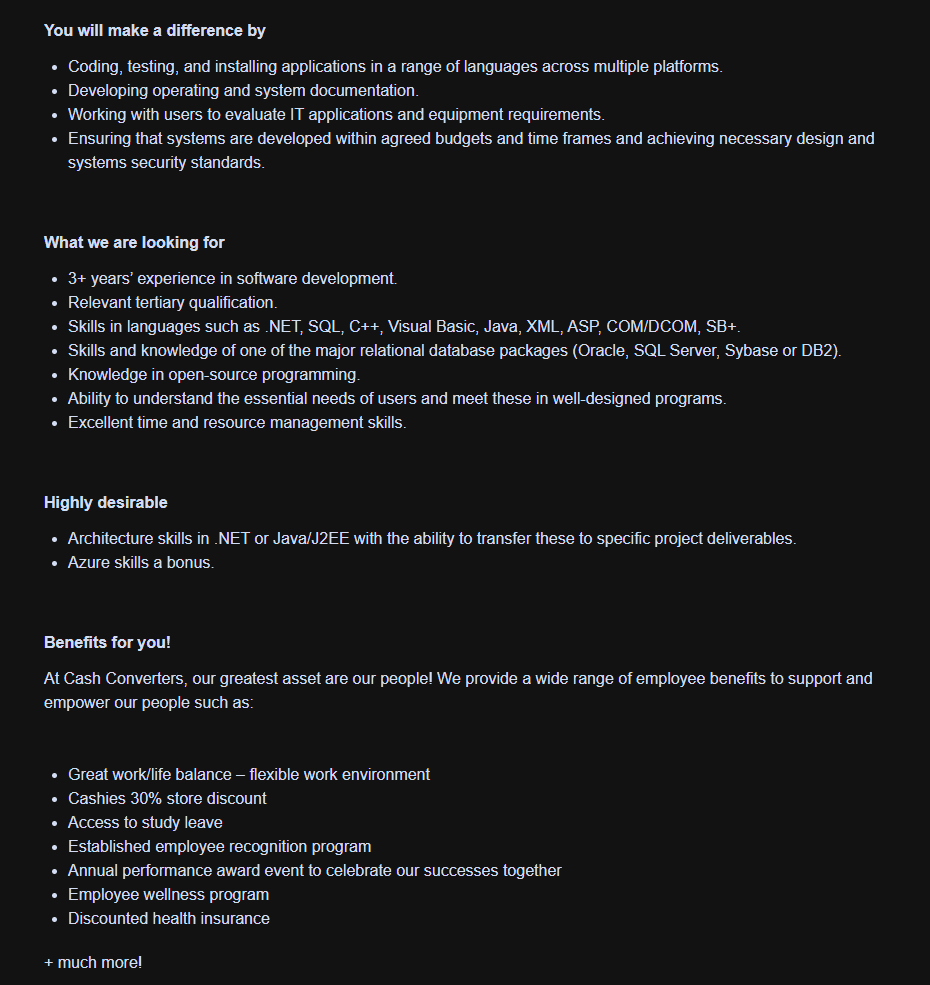
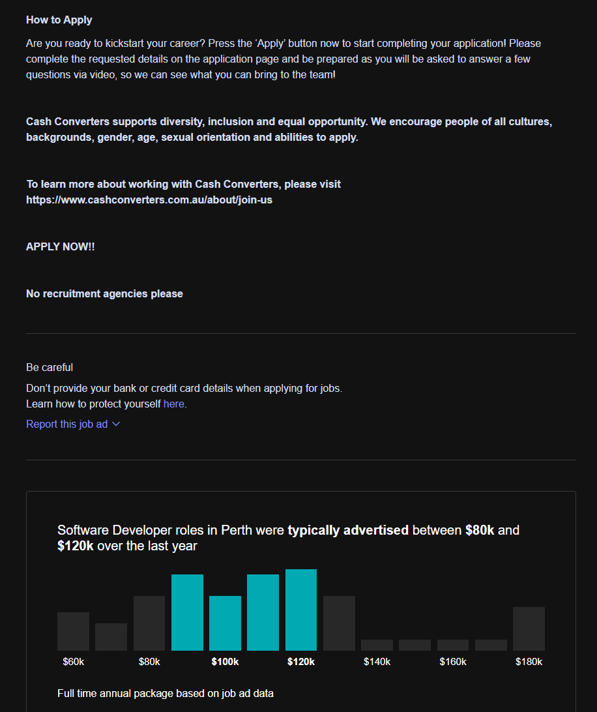
The role involves the design, development and maintenance of Cash Converters internal application software. This includes using multiple languages to code, test and install these programs across varying platforms, as well as creating documentation for the systems and their operations. Assessment of the required IT applications and equipment with the end users will also need to be performed. These tasks are expected to be performed whilst staying within the budgets, time frames and standards that have been specified, including the security and design of the systems.
The reason this role appeals to me is that firstly it is a company I have been involved with, in terms of buying, selling and procuring loans, so I would already have a rough idea of the kind of systems that would be involved within the organization. The job is also appealing as it touches on many aspects of IT, such as coding, testing and database management, that I have both already some experience with as well as an interest in. Finally, while the salary for the position isn’t listed, the typical salary ranges from $80k - $120k, which as I have a family would allow me to comfortably provide whilst doing something that interests and challenges me. There is also the implied possibility for a work-from-home arrangement which would also suit my situation quite well.
Below is a list of the skills/requirements that the employer is looking for which I do not currently possess, along with a brief description of the languages mentioned.
Below is a list of the skills/requirements that the employer is looking for which I do currently possess, along with a brief description of the languages mentioned.
To meet the job requirements that I have yet to obtain I plan to finish the Bachelor of Information Technology, which will fulfill the relevant tertiary qualification requirement, as well as equip me with some of the skills I have yet to achieve, such as the languages/systems mentioned. If any are left unobtained after finishing the Bachelor I would undertake further study, either at an accredited institution such as RMIT or via other online learning source like Pluralsight. I also plan to produce some personal projects in addition to the portfolio of work from RMIT and have them published on GitHub to showcase my understanding and abilities within the languages/systems required. In terms of the 3+ years’ experience in software development, I would be looking at more junior/graduate positions, as well as possible internships to provide me with those years of experience. It’s my plan to utilise any industry contact made during my studies to network and try increase my chances of being able to secure myself on of these, as it would be much more beneficial then just relying on cold applications and my CV/Bachelor/portfolio alone.
|
|
|
|
|
|
|
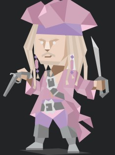 |
|
|
|
|
https://www.16personalities.com/entp-personality
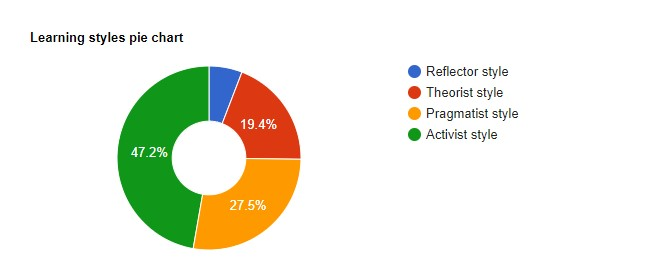
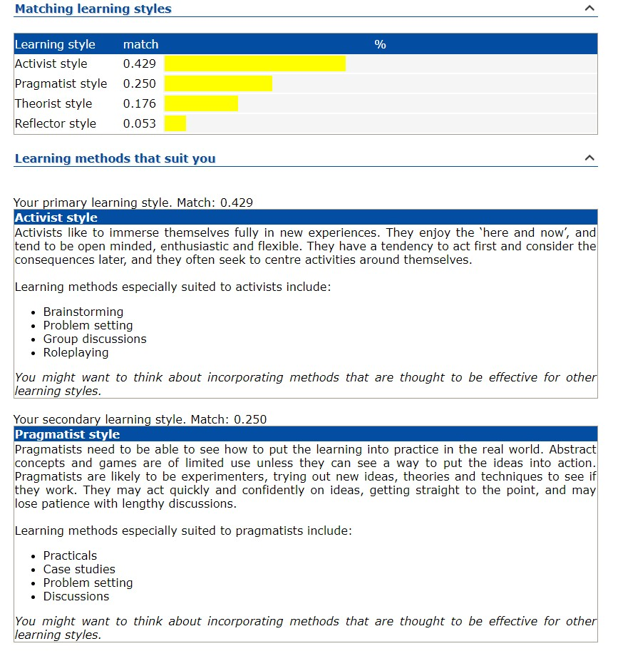
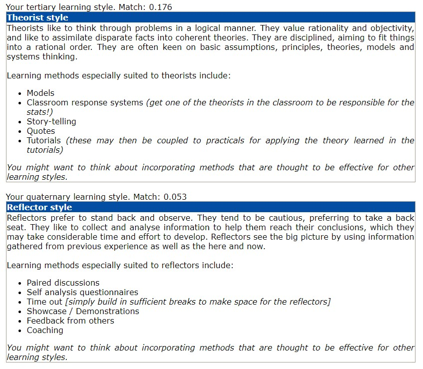
Activist Style – Able to dive into new experience and am open minded, flexible and enthusiastic. Good at problem setting, brainstorming, group discussions and roleplaying. (EMTRAIN WP8, nd)
Reflector Style – Am not overly cautious and do not like to sit in the back seat. I am more the ‘ac first, consider consequences later’ type then to perform deep analysis and reflection before acting. As such am not that great at self-analysis questionnaires. (EMTRAIN WP8, nd)
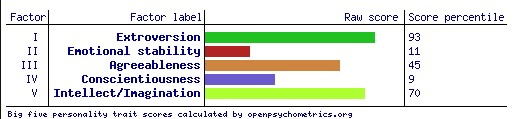
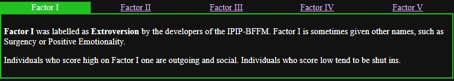
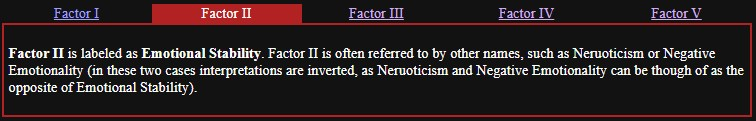
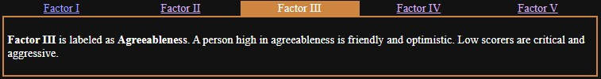
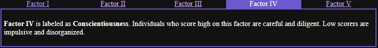
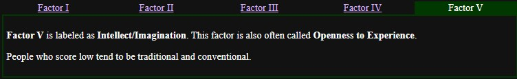
https://openpsychometrics.org/tests/IPIP-BFFM/
While overall I do feel like personality tests, particularly ones like Myers-Briggs, can feel a little bit like intellectual horoscopes, I do feel that there is some validity in some of the points made, especially from the smaller tests such as the Big 5 Personalities one. The problem I’ve had in the past with tests like these is that I had a hard time being honest with myself, instead trying to portray an edited, ‘good’ version of me, which would result in very positive personality types in the case of Myer-Briggs, or high scores across the board with ones like the Big 5. In those scenarios I could say that the results were invalid as I had tipped the scale to only show me positive attributes about myself. But this time around, as have been in a much better place mentally then the last time I did anything like this, the results are a lot more rounded and feel truer. While I do have plenty of positive traits such as being outgoing and friendly, a quick thinker, imaginative and knowledgeable, I definitely do also have my negative traits, such as impulsiveness, being a bit disorganised and chaotic at times, a bit emotionally unstable and can come up with great ideas but then kind of drag my feet getting them off the drawing board. Case in point, I’ve been thinking about this assessment for the last 3 weeks but have only just started writing as of the 19th, with almost all of the work being done as a spurt of energy from 2 – 8 am.
Withing a team, I tend to be a bit more organised, but that’s only if the other members of the team are organised too. If I’m in a group of people who are just as erratic and disorganised as I am, I tend to just work in my own style and time, only really ouching base with the other members whenever they also decide to do so. If I’m able to set out a schedule with my team members and everyone is on board and understands their individual roles, then I find it easier to stick to the schedule/my set tasks, but if someone else shoehorns themselves in with opposing times and roles then I can get a bit antsy and just do it alone, kind of assuming that I can’t rely on the others to stick to their parts. That doesn’t mean I have to always be the team leader, it’s more if I have taken or been given that role and I feel usurped then I will tend to go rogue and just lone wolf it, even if it means there might be double ups of certain aspects of the task.
As I am a very open-minded person and also don’t particularly like to be stuck within a box of tradition or convention, I will get along and work best with people who have the same kind of mindset. However, as I also can find it hard to focus and can get stuck in going from a plan to action, I also need teammates who aren’t like that, as I take inspiration from that as well as feed off of that energy to push myself to do the same. This can be a bit tricky as people who fit into the first description tend to not usually fit into the second and vice versa, but if I am able to form a team with individuals who meet both then we could do some amazing work.
The project idea I have is an app and associated API the allows customers of energy companies (gas, water and electric) to have their usage displayed in a graph format, along with statistics such as average daily/weekly/monthly usage, usage comparisons from month to month or cycle to cycle (bi-monthly or quarterly) and next bill estimation, done based on the current rates they pay with their energy supplier. The application would also allow for the ability to store and access their bills and to upload their meter reading if the meter reader was unable to access their property/meter due to gates/dogs/location etc. It would also provide approximate meter reading dates so the user can make the meter accessible if they would prefer it to be read by the meter reader.
The motivation for this originally came from the fact that our property has a gated fence and on more then one occasion we have gotten notices about missed reading which in turn led to an estimate being made by the energy companies, and they usually overestimate which led to overcharging. While these do get credited when the correct reading information is provided, the only way to do so is to take a picture of the meter and email it through to the company and then have to wait for them to respond. This was expanded to the above-mentioned features as when I looked into what the companies had available these features were lacking, or not universal.
The project would actually be in two parts as the first would be to design and create an API for the different energy companies to use that would allow for access to the relevant data required, such as rates, bills, their meter readings and the customer details. This would have a retrieval component that can be configured by the energy companies to control the information access, so that security and privacy is maintained. On the other side would be the component that supplies the information to the application so that analysis and predictions can be performed. The generation of graphs could also be included within this API, or this could be achieved using other .NET components or APIs.
The app itself would have a login screen for security and privacy, an overview of all energy usages for the current month, with this view being able to be toggled to weekly or daily view. The user can also toggle to view individual energy types such as water or electricity only. The customer can also choose to only link on of their energy companies, such a Water Corp, or link all their companies. There would also be the ability for user to use the app without linking to their energy companies by manually entering their rates and meter readings as frequently as they wish, with estimates still being performed based on these inputs. They can also choose to use the scan option to scan in paper bills they receive to keep a copy/extract usage/rate information.
For the feature that allows customers to upload missed meter readings, these would be done by manually entering the numeric value and also uploading an image of the meter. The numeric value can also be extracted from the image and verified if correct by the user instead of manually entering the values. This is also true for if the customer wants to add manual meter reading into the app to increase estimate accuracy. Once the missed reading are uploaded the information, along with the image will be transferred to the respective company via the API either to an email as is the current system or to an application/storage location on the companies end.
For user who choose to link to their energy company, they can choose to have their bills delivered directly to the application, with a push notification informing the user of the bill being received. If the customer wishes to instead continue to receive their bills in paper form via mail, they can opt out of this feature in the settings menu.
The application would have both a light and dark theme, as well as accessibility features such as a high contrast theme, colourblind modes for the graphs/buttons and resizable fonts. Speech-to-text and text-to-speech options could also be included if needed, but most phones can already use their inbuilt speech-to-text and text-to-speech within most apps, so instead the app could just be configured to ensure these tools can access it.
Besides computers to design and created the API/application, another piece of hardware required would be a server to host the API, though this does not need to be our own, but the choice of server host must be a good one as mobile user are very demanding. (Davies, 2022)
Software wise, a development environment to create both the application and RESTful API would be required. As I have experience with it, as well as it provides tools to make both the application and API, I would be thinking of using Visual Studio, so I can use C# and VB.NET, as well as the ASP.NET frameworks. (Davies, 2022)
The skills required would be
If successful, this project would make it a lot easier to manage energy usage/bills and would also provide a way for customer to avoid overcharging from inaccurate meter estimates. It would also allow users to have a relatively accurate prediction of their next bill based on the information given to the app through estimation, analysis and averaging, along with the rates information provided. It would also, if the user chose, help to eliminate paper bills and keep all their energy billing in the one place. I feel it would provide a lot of people with access to a tool that they don’t currently have that will make budgeting and general energy maintenance easier.
Buttice, C., 2021. C plus plus Programming Language (C++). [Online]
Available at: https://www.techopedia.com/definition/26184/c-plus-plus-programming-language
[Accessed 19 03 2022].
codecademy, 2022. What is a Relational Database Management System?. [Online]
Available at: https://www.codecademy.com/article/what-is-rdbms-sql
[Accessed 19 03 2022].
Contributor, T., 2019. Visual Basic (VB). [Online]
Available at: https://whatis.techtarget.com/definition/Visual-Basic-VB
[Accessed 19 03 2022].
Davies, A., 2022. How to Build a RESTful API for Your Mobile App?. [Online]
Available at: https://www.devteam.space/blog/how-to-build-restful-api-for-your-mobile-app/
[Accessed 20 03 2022].
EMTRAIN WP8, nd. Learning Styles Quiz. [Online]
Available at: http://www.emtrain.eu/learning-styles/
[Accessed 20 03 2022].
Gupta, S., 2021. What Is SQL & How Does It Work? A Guide to Structured Query Language. [Online]
Available at: https://www.springboard.com/blog/data-analytics/what-is-sql/
[Accessed 19 03 2022].
Johari, A., 2021. What Is Java? A Beginner’s Guide to Java and Its Evolution. [Online]
Available at: https://www.edureka.co/blog/what-is-java/
[Accessed 19 03 2022].
manmeetjuneja5, 2020. Difference between COM and DCOM. [Online]
Available at: https://www.geeksforgeeks.org/difference-between-com-and-dcom/
[Accessed 19 03 2022].
McCoy, L., 2022. Microsoft Azure Explained: What It Is and Why It Matters. [Online]
Available at: https://ccbtechnology.com/what-microsoft-azure-is-and-why-it-matters/
[Accessed 19 03 2022].
Microsoft, 2022. What is .NET?. [Online]
Available at: https://dotnet.microsoft.com/en-us/learn/dotnet/what-is-dotnet
[Accessed 19 03 2022].
NERIS Analytics Limited, 2011-2022. Strengths & Weaknesses. [Online]
Available at: https://www.16personalities.com/entp-strengths-and-weaknesses
[Accessed 20 03 2022].
Open-Source Psychometrics Project, 2019. Big Five Personality Test. [Online]
Available at: https://openpsychometrics.org/tests/IPIP-BFFM/
[Accessed 20 03 2022].
Roche, E., 2000. Explaining XML. [Online]
Available at: https://hbr.org/2000/07/explaining-xml
[Accessed 19 03 2022].
Telang, T., 2022. What is J2EE?. [Online]
Available at: https://www.educative.io/edpresso/what-is-j2ee
[Accessed 19 03 2022].
w3schools, 2022. ASP and ASP.NET Tutorials. [Online]
Available at: https://www.w3schools.com/asp/default.ASP
[Accessed 19 03 2022].
Watkin, T., 2000. Reference Manual SB+ Server. [Online]
Available at: http://intranet.fitltd.com/KnowledgeHome/SB/SB+/sbref.pdf
[Accessed 19 03 2022].
| Complete documentation
|
Framework plugins
|
Tons of examples
|